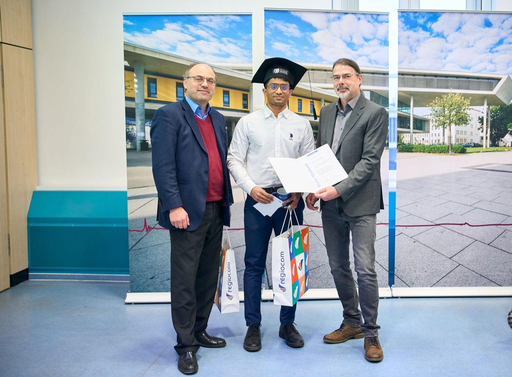

Best Outgoing Student · Master's
Otto von Guericke University, Magdeburg. M.S. in Data and Knowledge Engineering, Grade 1.4.
Ingolstadt, Germany
I build production agentic AI systems: RAG pipelines with hybrid search, agent orchestration, and evaluation frameworks that turn LLM prototypes into reliable products.

Otto von Guericke University, Magdeburg. M.S. in Data and Knowledge Engineering, Grade 1.4.
All Round Performance Award, B.Tech in Computer Science and Engineering (2015-2019).
Hybrid legal norm retrieval combining knowledge graphs with fine-tuned Sentence-BERT.
I am an AI & Software Engineer with three years of experience in Germany, delivering end-to-end AI solutions across cloud platforms in fast-paced startup environments. My focus is LLM-based agentic application development and context engineering: RAG pipeline optimization, tool calling, agent orchestration, and rigorous evaluation in production.
Before industry, I earned an M.S. in Data and Knowledge Engineering (Grade 1.4) at Otto von Guericke University, Magdeburg, where my thesis on hybrid legal norm retrieval won the Best Student Paper Award at JURIX 2024. I was named Best Outgoing Student at both my bachelor's and master's levels.
I care about the unglamorous parts that make AI systems actually work: chunking strategies, retrieval evaluation, token budgets, and citation traceability. When the answer matters, "the LLM said so" is not enough.
MaindTec GmbH · Ingolstadt, Germany
Vay Technology · Berlin, Germany
Einbliq.io · Munich, Germany
Infosys R&D Ltd · Thiruvananthapuram, India
Master's thesis work. A hybrid retrieval pipeline combining knowledge graph traversal with fine-tuned Sentence-BERT embeddings to retrieve relevant legal norms from the Japanese Civil Code, achieving competitive results on the COLIEE 2024 Task 3 benchmark.
Read the paper →Improved legal text explainability by highlighting semantically aligned spans between queries and legal norms.
Read the paper →A chatbot for guided learning built on knowledge graphs constructed from OCR-extracted textbook content.
View publication →OCR-based keyword extraction and ranking system to enhance student learning from lecture slides. Published at IEEE.
View on IEEE Xplore →Flagship personal project
An AI-powered mental health companion with journaling, mood tracking, therapy support, evidence-based advice via RAG, and crisis guardrails. Every message runs through a LangGraph state machine: load history, detect intent, run a non-negotiable crisis check (escalating to 988 and international hotlines before anything else), then route to the right tool. Moods are passively detected from conversation, journals are auto-analyzed for themes and sentiment, and advice answers cite uploaded mental health literature page by page over SSE streaming.
Full-stack build: Next.js 16 + React 19 frontend, FastAPI backend, Groq (Llama 3.3 70B) with local BGE embeddings via fastembed, SQLite and ChromaDB, GitHub Actions CI, and Docker Compose. Total running cost: $0.
A marketplace of modular agent capabilities inside MaiQ. Users compose new skills directly in chat from natural-language prompts and run them inline, lowering authorship from engineer-only to end-user.
Simulated a UR5 robotic arm in Webots, streamed joint and velocity data over MQTT into SQLite, and visualized it in a real-time Dash app with predictive modelling on top.
Cricket analytics notebooks, an OOP tennis match simulation, and ML-based cricket scoreboard automation. Completed a sports analytics course with Mad About Sports and write about it on Medium.
A set of hands-on repos exploring the LLM stack: RAG with Streamlit, agentic AI with locally hosted models via Ollama, MLOps with MLflow, Kubernetes deployments, and a structured AI engineering growth roadmap.
Otto von Guericke University, Magdeburg, Germany
Mar Baselios College of Engineering and Technology, India
I am based in Ingolstadt, open to opportunities across Germany, and always happy to talk about agentic systems, retrieval, and evaluation.